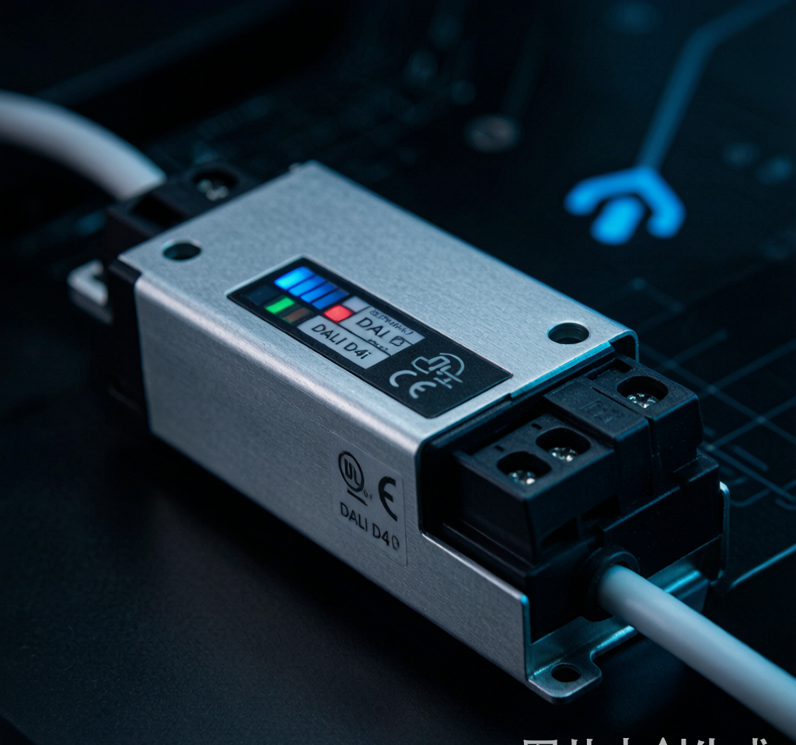

做出口照明的老板最近有点慌。
2026年5月起，欧盟修订后的《能源性能建筑指令》（EPBD）进入全面实施阶段。核心要求很明确：所有新建商业建筑必须安装自动照明控制系统和楼宇自动化系统（BAS）。 智能照明从"加分项"变成了"强制项"。
更狠的是，这只是门槛。想进欧盟新建商业建筑市场，你的产品还得满足一系列具体技术条件。其中最硬的一条，落在驱动电源上——必须符合 D4i Gen 2 标准。
从产品合规，到系统合规
过去十几年，中国照明企业出口欧盟，主要盯的是光效、能效、ErP生态设计这些单一产品指标。只要灯具本身达标，基本就能卖。
但EPBD的逻辑完全不同。它关心的不是你这盏灯好不好，而是这盏灯能不能作为一个"可联网、可管理、可优化"的节点，融入到整栋楼的能源系统里。
换句话说：产品合规时代结束了，系统合规时代开始了。
灯具不再只是发光的硬件，而是建筑能源管理网络里的一个终端。它要能被楼宇自动化系统调度，能根据人员活动、自然光强度自动调节亮度，还要能把能耗数据传回去。
为什么是驱动电源扛下最硬门槛？
因为驱动电源是整个灯具里唯一同时连接"电"和"智能控制"的部件。
新规在驱动端提出了非常具体的要求：
- 必须符合 D4i Gen 2 标准。D4i 是 DALI 联盟在 DALI-2 基础上定义的扩展，专门面向智能灯具内部集成。
- 必须支持能耗计量和故障诊断。对应 DALI Part 250–253，驱动器得能上报自己吃了多少电、有没有异常。
- 必须独立安装，采用可插拔接线端子。不能跟 LED 模组焊死在一起，方便后期维护和更换。
- 驱动器不得与 LED 模组共享散热路径。这是为了保证驱动在高温环境下稳定工作，延长寿命。
这些要求加在一起，直接淘汰了一大批传统驱动方案。很多中小企业过去用的"能亮就行"的驱动，现在连入场资格都没有。
D4i 到底比传统 DALI 强在哪？
很多人把 D4i 简单理解成"高级版 DALI"，其实不完全对。
DALI 本身是一种数字调光协议，解决的是"怎么调光"。D4i 在 DALI-2 基础上，额外定义了电源、数据、传感器集成等接口规范，解决的是"怎么让灯具变成一个智能节点"。
| 能力 | 传统 DALI | D4i Gen 2 |
|---|---|---|
| 数字调光 | ✅ | ✅ |
| 单灯寻址 | ✅ | ✅ |
| 能耗计量 | ❌ | ✅ |
| 故障诊断上报 | 有限 | ✅ |
| 辅助电源给传感器供电 | ❌ | ✅ |
| 独立安装/可插拔端子 | 不要求 | 强制要求 |
所以，D4i 不只是调光更好，而是让驱动器从"电源"升级为"带通信和感知能力的智能电源"。
中小企业最现实的应对路径
新规一来，很多老板第一反应是：要不要自研协议栈？要不要重新设计整个灯具？
答案是：先别急着自研，先把驱动换了。
业内专家的共识是，中小企业最务实的路径分三步：
第一步：换 D4i 认证驱动。 这是硬件层面的硬门槛，没有认证驱动，产品连入场资格都没有。直接采购国内已经通过 D4i 认证的驱动电源厂商方案，是最快、最省的切入点。
第二步：通过标准化通信模组解决"能不能连"。 协议栈适配更多是软件层面的工作，可以通过外接 Matter、Zigbee 或 SRI 兼容的通信模组来实现，边际成本远低于自研。
第三步：积累了合规经验后，再推进系统级适配和深度集成。 包括楼宇自动化平台对接、能耗数据分析、预测性维护等。
这个顺序很重要。先解决"能不能卖"，再解决"能不能连"，最后才考虑"能不能做得比别人好"。
对国内工程商和采购方的启示
就算你不做出口，这个变化也值得关注。
欧盟市场一向是全球照明技术的风向标。D4i 驱动的普及会带动国内供应链快速成熟，成本会下降，国产 D4i 驱动方案会越来越多。这意味着：未来国内高端商业项目、智慧建筑项目，也很可能把 D4i 作为一个默认要求。
现在选型时多留意驱动是否支持 DALI-2 / D4i、有没有能耗计量接口、是不是独立可更换结构，相当于提前为三到五年后的项目标准做准备。
一句话总结
EPBD 不是在刁难中国照明企业，而是在重新定义游戏规则：灯具必须从孤立单品变成建筑能源网络里的智能节点。而 D4i 驱动电源，就是这个新游戏里最先必须拿到的入场券。
先换驱动，再谈智能。这个顺序，出口企业和国内工程商都一样。